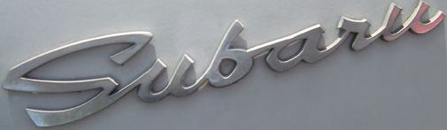
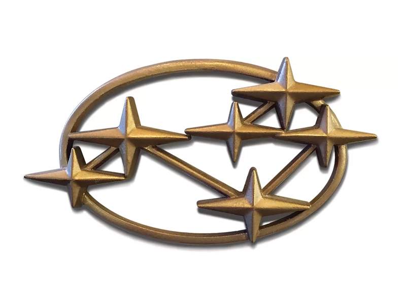
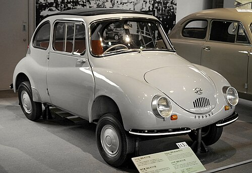
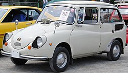
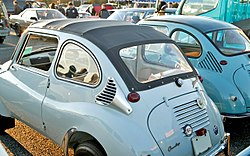
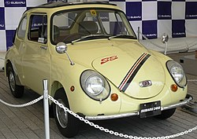
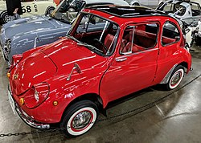
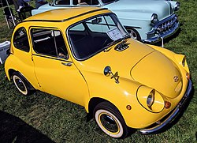

Back to main


Subaru 360 — двухдверный городской автомобиль с заднемоторной компоновкой, выпускавшийся с 1958 по 1971 год японской компанией Subaru.

Subaru 360 считается самым первым серийным автомобилем компании. За 1958—1971 год было выпущено 392000 экземпляров.
Subaru 360, известный своими небольшими габаритными размерами, снаряжённой массой 450 кг, монококовой конструкцией, задней подвеской с качающейся осью, стеклопластиковой панелью крыши и задними распашными дверями, был разработан в ответ на правила японского правительства в отношении кей-каров и его предложение о более крупном «национальном автомобиле», оба из которых должны были помочь моторизировать японское население после Второй мировой войны. Общие габариты и объём двигателя соответствовали японским правилам для кей-каров.
Прозванный в Японии «божьей коровкой», Subaru 360 являлся одним из самых популярных автомобилей на японском рынке. Автомобиль выпускался в кузовах универсал (Custom), полукабриолет и седан. Кодовое обозначение двухдверных седанов — K111, кодовое обозначение универсалов — K142. В США было продано 10000 экземпляров, импортированных Малкольмом Бриклином (Malcolm N. Bricklin) и рекламировавшихся как «дешёвые и уродливые» (англ. Cheap and Ugly).
Subaru 360 оснащался двухтактным рядным двухцилиндровым двигателем объёмом 356 см3 с воздушным охлаждением, установленным поперечно сзади. Коробка передач — трёхступенчатая механическая.




